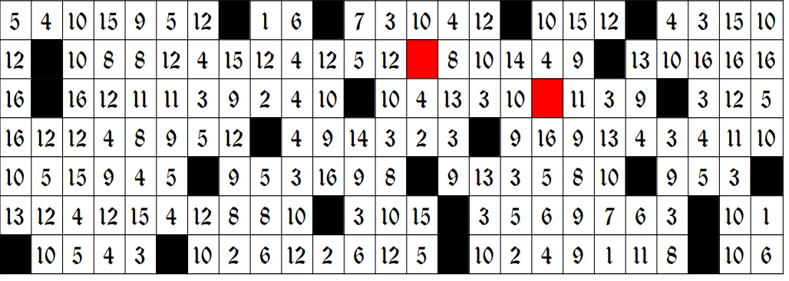

Siete sempre più vicini al leggendario tesoro di Ildemondo… non arrendetevi proprio ora! Secondo antiche leggende, il tesoro di Ildemondo è un bottino dal valore inestimabile, composto da ricchezze provenienti da ogni angolo del mondo allora conosciuto: gemme scintillanti, gioielli d’oro finemente cesellati, sete e pelli tra le più rare e pregiate. Ma tra tutti questi tesori, il più ambito e misterioso resta il suo anello: un monile avvolto nel mistero, di cui si dice racchiuda un potere antico e dimenticato.
La storia narra che, per non dimenticare il luogo esatto in cui lo aveva nascosto, Ildemondo disseminò all'interno del suo castello una serie di enigmi e indizi. Il castello sorgeva nel punto più alto del castrum medievale di Affile, da dove si poteva dominare con lo sguardo l’intero territorio circostante. Le sue stanze, sontuose e riccamente decorate, erano adornate con drappi e arazzi realizzati da maestri artigiani, segno della raffinatezza e del potere del suo antico signore.
Il cuore del castello era la magnifica Sala della Vite, un ambiente maestoso interamente dedicato alla pianta simbolo del territorio affilano. Le pareti erano coperte da arazzi che raccontavano, scena dopo scena, la vita della vite: dalla vendemmia alla potatura, fino alla vinificazione del celebre e amatissimo vino Cesanese. Su uno dei lati lunghi della sala troneggiava un grande camino in pietra, sopra il quale erano incisi con ricorrenza (come potete vedere qui al lato) i simboli delle sei contrade storiche del borgo: Campanile, Cavata, Garbatella, Poggio, Tora e Torre.
Il soffitto ligneo era impreziosito da due imponenti candelabri, forgiati con maestria e decorati con motivi floreali e viticoli. Il pavimento, invece, era composto da eleganti piastrelle bianche e nere disposte a scacchiera, ognuna delle quali recava inciso un numero. C'è chi dice che proprio quei numeri siano la chiave per decifrare l’ultimo enigma che conduce al nascondiglio del tesoro, basta girarsi attorno...
